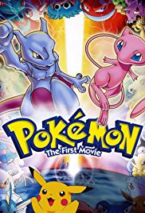
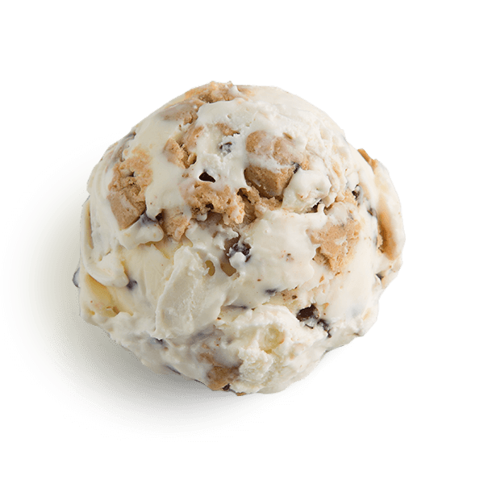

| Food |
|
I love ramen because of all the really good stuff inside of it and i love it with pork belly
and I love the taste of the soft boiled egg and it is the best food to eat during cold weather |
Movie |

| This was my favorite movie as a kid and it still is.
The animation and the drawing of all the pokemons is so amazing looking to me and not to mention its pretty sad. You
didn't watch the movie if you didn't cry when Ash turned to stone. |
| Ice Cream |
 |
Cookie dough is the best ice cream ever. You can taste the flavor
of the vanilla mixed with pieces of chocolate and cookie dough pieces. Not to mention the best cookie which is chocolate
chip and the two combined together on the scrumptious waffle cone is amazing. |